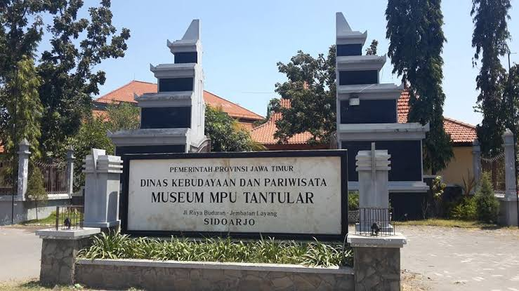
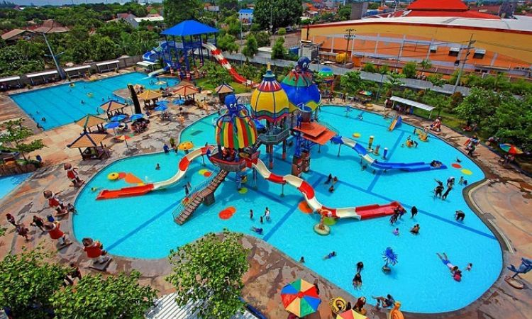
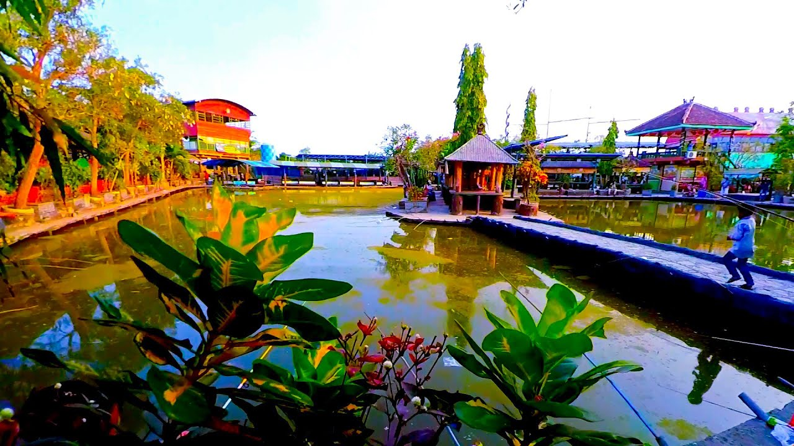
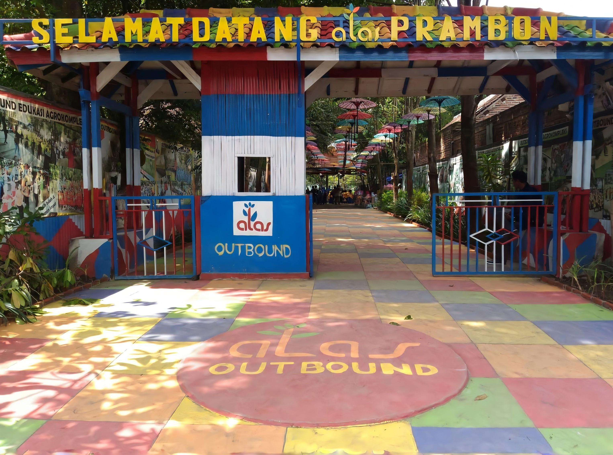
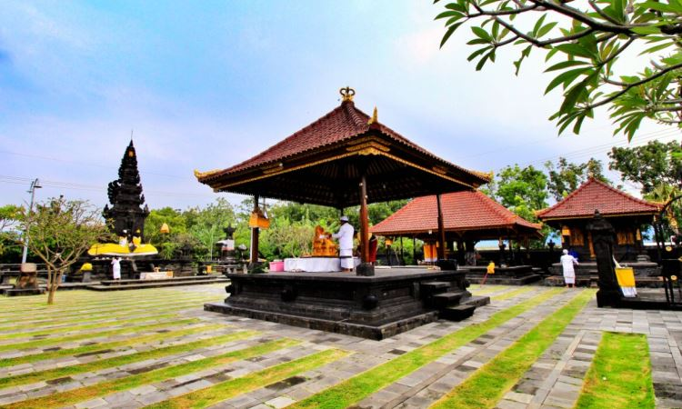
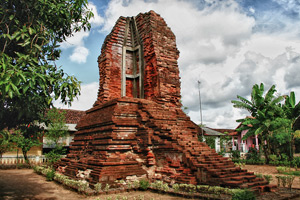

.jpg)
Lumpur Lapindo
Wisata Lumpur Lapindo di Sidoarjo adalah salah satu tempat wisata yang berada di desa ketapang , kecamatan tanggulangin, kabupaten sidoarjo, provinsi jawa timur, negara indonesia.
Baca selengkapnya >>>>>

Pulau Sarainah
Pulau Sarinah adalah sebuah pulau sungai yang terbentuk dari endapan lumpur hasil buangan ke Sungai Porong, Sidoarjo.
Baca selengkapnya >>>>>

Museum Mpu Tantular
Museum Negeri Mpu Tantular, adalah sebuah museum negeri yang berlokasi di kecamatan Buduran, Sidoarjo, Jawa Timur.
Baca selengkapnya >>>>>

Suncity Waterpark
Di tempat ini terdapat banyak permainan air yang bisa dicoba, mulai dari lazy river, dragon sliding, hingga wahana air mandi busa.
Baca selengkapnya >>>>>

Delta Fishing
Delta fishing adalah tempat wisata untuk menyalurkan hobi memancing, dengan fasilitas beberapa kolam pemancingan.
Baca selengkapnya >>>>>

Alas Prambon
Alas Prambon sangat cocok untuk liburan keluarga, terutama untuk anak anak. Sebab tempat tersebut adalah objek wisata edukasi menarik untuk anak anak.
Baca selengkapnya >>>>>

Pura Jala Siddhi Amerta
Pura Jala Siddhi Amerta memiliki bangunan yang begitu mewah dan tidak kalah indah dari pura di Bali.
Baca selengkapnya >>>>>

Candi Pari
Objek wisata bersejarah ini selain menarik, tetapi juga memberi wawasan kepada pengunjung. Menurut catatan sejarah candi Pari adalah bagian dari pola candi Khamer yang ada di Birma juga candi Champa di Thailand.
Baca selengkapnya >>>>>

Candi Sumur
Candi Sumur terbentuk dari susunan bata merah. Pada bangunan candi ini juga tidak ditemukan ukiran atau relief-relief yang menghias dinding atau kaki candi. B
Baca selengkapnya >>>>>